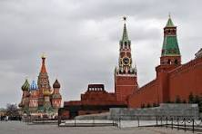
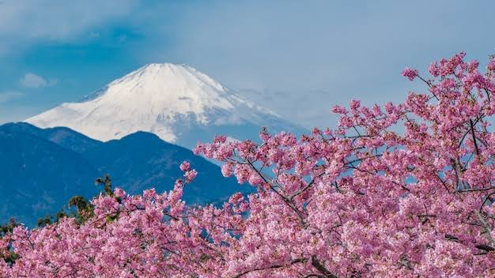
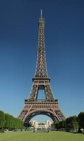
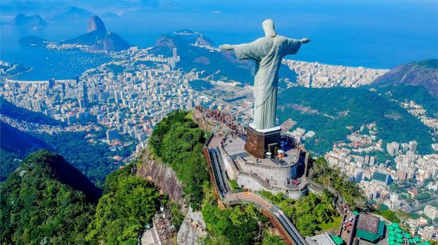
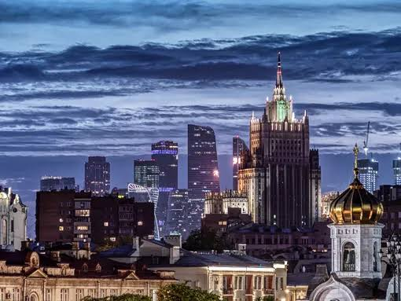
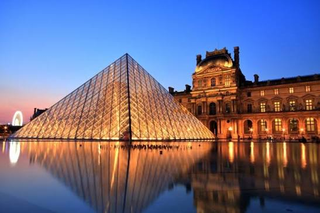

Главная страница
Япония
Список стран мира





Россия — крупнейшее государство мира по площади территории (более 17 миллионов квадратных километров). Страна расположена одновременно в восточной части Европы и северной части Азии. Территория омывается водами Северного Ледовитого, Тихого и Атлантического океанов.Благодаря огромной протяженности Россия охватывает 11 часовых поясов и практически все климатические зоны: от арктических пустынь на севере до влажных субтропиков на юге Черноморского побережья. В России находится самое глубокое и чистое пресноводное озеро планеты — Байкал.

Франция — одно из ведущих государств Западной Европы с многовековой историей, богатым культурным наследием и развитой экономикой. Столица страны — Париж, признанный мировой центр искусства, высокой моды и науки.Страна занимает одно из первых мест в мире по популярности среди иностранных туристов. Природа Франции чрезвычайно разнообразна: от живописного атлантического побережья Нормандии и солнечных пляжей Лазурного берега до заснеженных пиков Французских Альп.
Россия граничит с 16 государствами на суше — это мировой рекорд по числу сухопутных соседей.
© Разработчик: Чекин Н.Е., группа Б9124-09.03.04